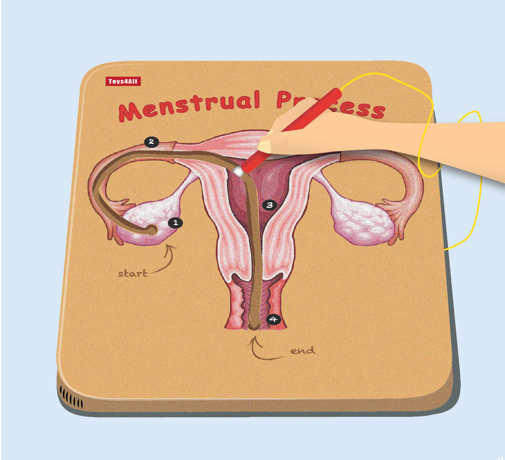
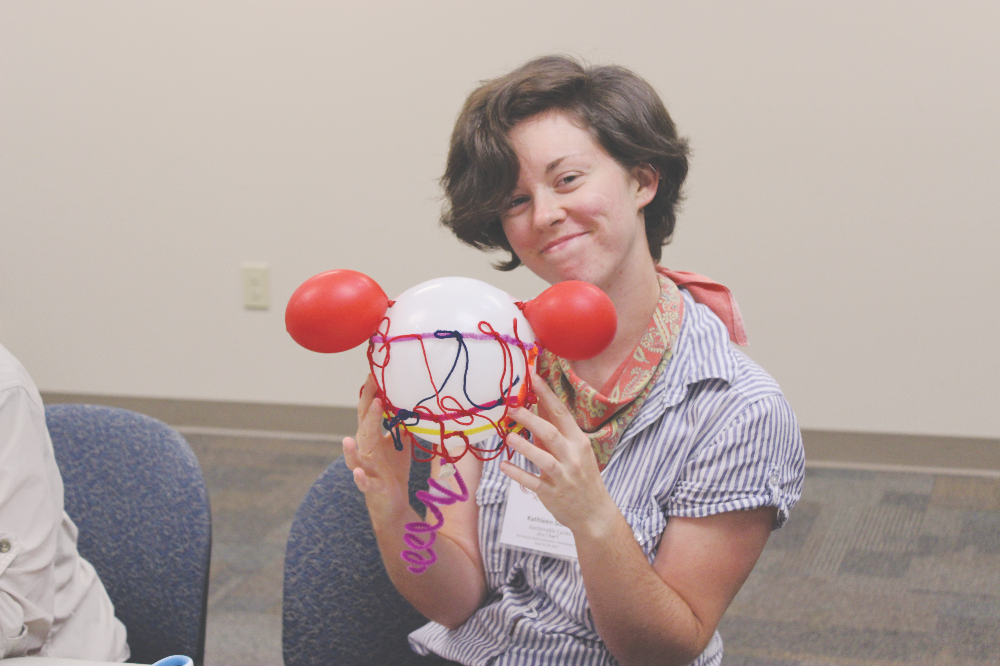
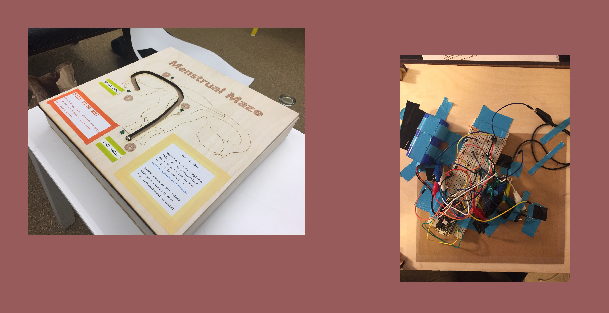

Exploring Early Public Health Education
What is the Menstrual Maze?
The Menstrual Maze is a digitally embedded educational toy that steps through the menstrual process. We built this toy to explore attitudes towards early reproductive health education.
Skills
My role
I was the design and research lead, supported by my friend and teammate, Leena Choi and the mentorship of HCDE Professor Daniela Rosner and PhD researcher Sarah Fox.
How did this come about?
The original idea stems from a design workshop in which menstrual health activists, educators, and community members attended. Participants imagined a uterus toy that could facilitate healthy conversations between parents and young children in spaces such as a pediatrician’s waiting room and classrooms.
Building on the idea
To build upon the idea, our team of two visualized, designed, and built a working prototype using a combination of laser cutting and electronics. We employed research through design methods, in which the design artifact was used as a means to explore, discover, and iterate. Our objectives were to explore 1) what introducing children ages 4– 9 to reproductive organs looks like and 2) the types of interactions that emerge from joint media experiences between parents and kids over menstrual health.
Achievements🏅
This design was one of 12 projects (out of 79 total entries) to be presented at the CHI Student Design Competition for 2018 @ Montreal QC. Our research was published as part of CHI EA ‘18 Extended Abstracts of the 2018 CHI Conference on Human Factors in Computing Systems.
What did we learn? 💭
The biggest challenge was dealing with ambiguity. As a research through design project, I had to be comfortable with the idea that more questions were raised than answered. I found myself tasked with structuring an exploration versus concretely addressing an issue, which strayed from the problem solving mindset that I was used to as an experience designer. Ultimately, I learned to be more critical of my process– but also to embrace its uncertainty.